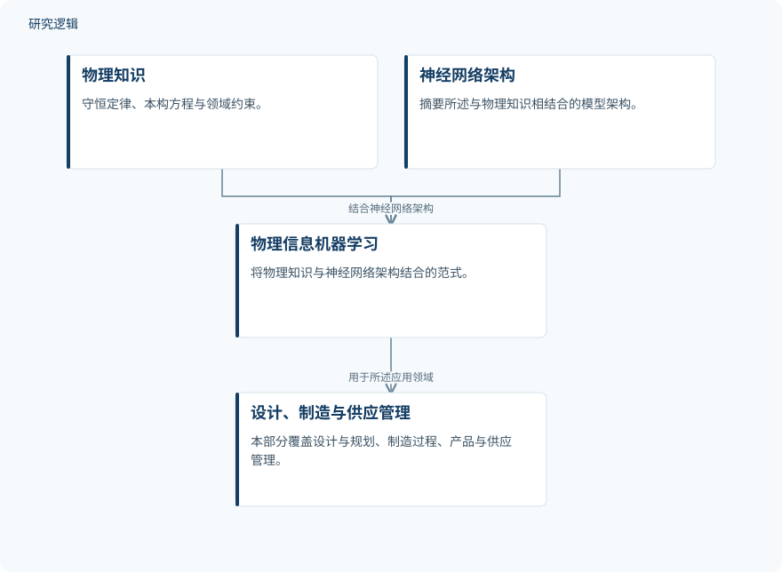

摘要解读
面向更智能设计与制造的物理信息机器学习：第二部分
Physics-Informed Machine Learning for Smarter Design and Manufacturing Part II
解读更新 2026-11-10 13:12 · 依据公开摘要整理，未核验全文细节
制造领域的机器学习，如何既有预测能力，又能让工程人员理解其物理依据？这篇专刊第二部分的摘要，将阅读重点指向物理知识与数据模型的结合，以及这种结合在设计、制造和供应管理中的价值。
文章目录
制造智能化不只需要更多数据
丰富数据、信息物理基础设施与人工智能正在共同推动制造系统转型。摘要提出的核心问题是：如何将物理知识嵌入数据驱动模型，同时兼顾预测能力与工程可解释性。这里的关注点不只是预测是否准确，还包括预测与物理规律是否一致。
从摘要表述看，本文承担的是专刊内容导引，而非单项实验研究的完整报告。第一部分涉及过程监测、故障诊断与预测，以及动态生产计划和调度；第二部分转向设计与规划、制造过程，以及产品与供应管理。
让物理知识进入神经网络
摘要将物理信息机器学习（PIML）描述为一种融合范式：把守恒定律、本构方程和领域约束与神经网络架构结合起来。在本部分涉及的应用中，物理知识可以表现为几何结构、机理方程或运行约束。摘要没有进一步展开具体模型结构、训练流程或约束的实现方式。
依据摘要整理的物理知识融合示意


仅概括摘要明确陈述的知识融合关系与应用范围，不代表具体训练流程，也不是论文原图。
下载 SVG图示关系说明
实线表示相邻阶段的信息流，虚线表示跨阶段联系或反馈。
物理知识 → 物理信息机器学习：融入物理知识；神经网络架构 → 物理信息机器学习：结合神经网络架构；物理信息机器学习 → 设计、制造与供应管理：用于所述应用领域
六项贡献呈现的共同价值
本部分汇集了六项采用PIML模型的研究贡献。摘要对这些工作的共同结论是：融入物理知识能够减少数据需求、改善泛化能力，并使设计、制造和供应管理应用中的预测与底层物理保持一致。
这些表述提供了理解专刊的共同线索，但不是各项研究结果的逐一比较。当前资料没有给出性能提升幅度，也无法据此判断每项贡献是否都同时实现了上述收益。
总体结论尚不能替代逐篇验证
仅凭摘要，无法判断各项研究的样本规模、数据来源、训练与测试划分、比较基线，以及验证覆盖的工况和应用范围。减少数据需求与改善泛化的判断分别建立在什么比较上，也需要继续阅读对应研究；这些信息未在摘要展开，不代表论文没有开展相关工作。
阅读启发：先辨认物理知识如何起作用
阅读启发：关注结构设计的读者，可优先追问几何结构与本构关系如何进入模型，以及物理一致性如何得到检验。关注智能运维的读者，则需注意本部分与第一部分的主题边界，不宜把这里的总体结论直接视为故障诊断或寿命预测效果已经得到验证。
以上为本站阅读启发与建议，不是论文已验证的结论。